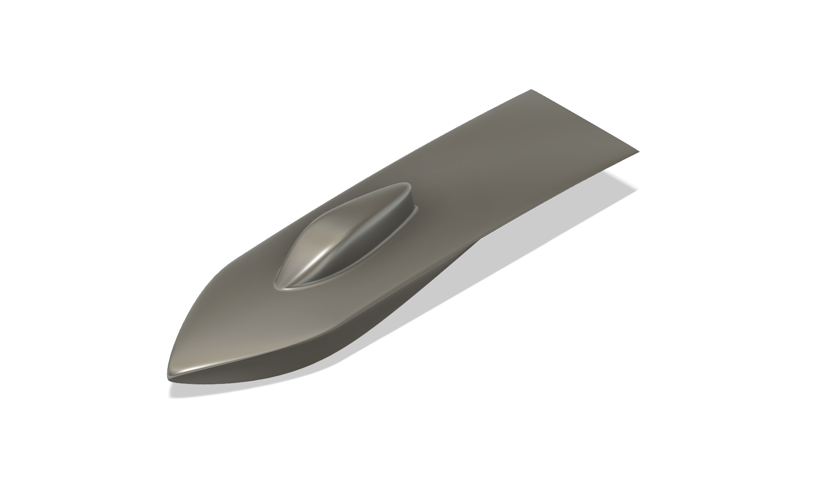
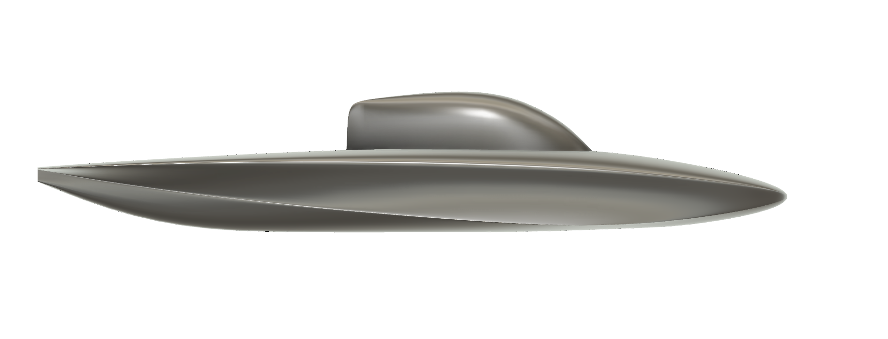
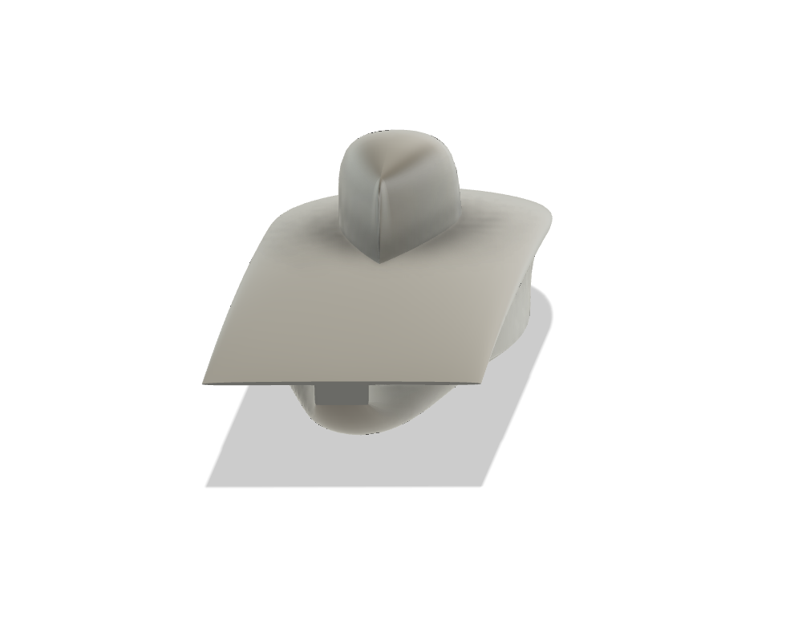
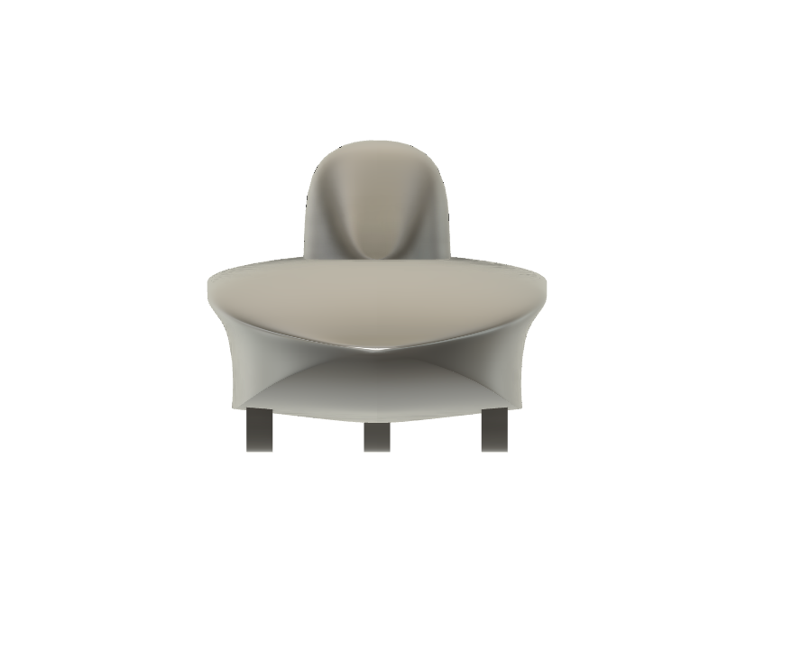
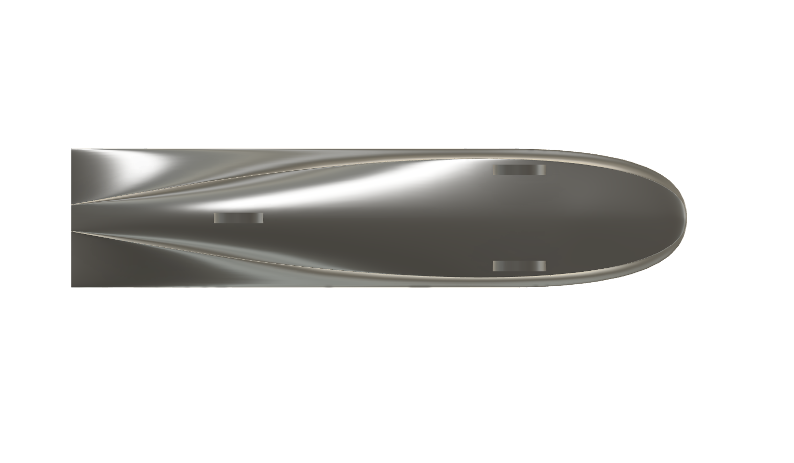
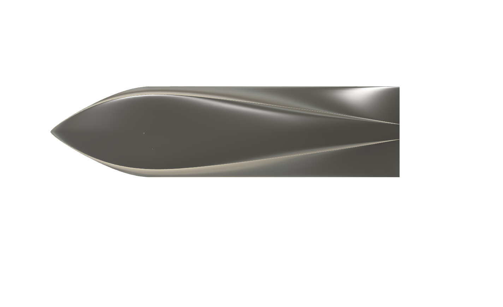
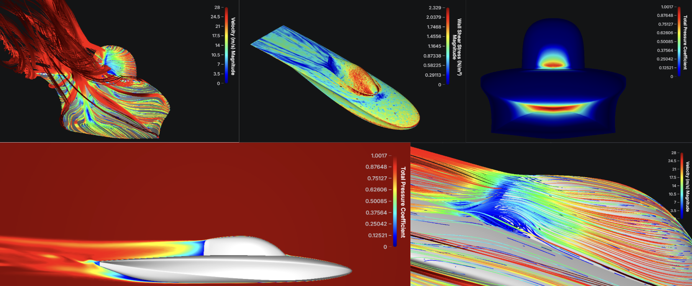
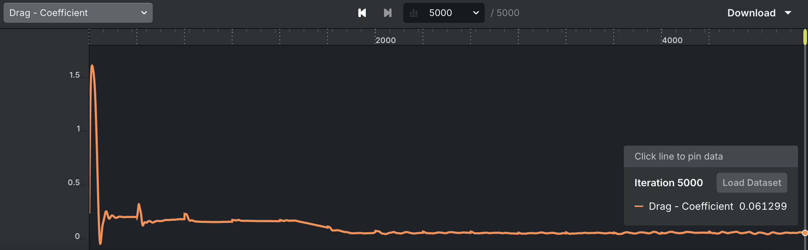
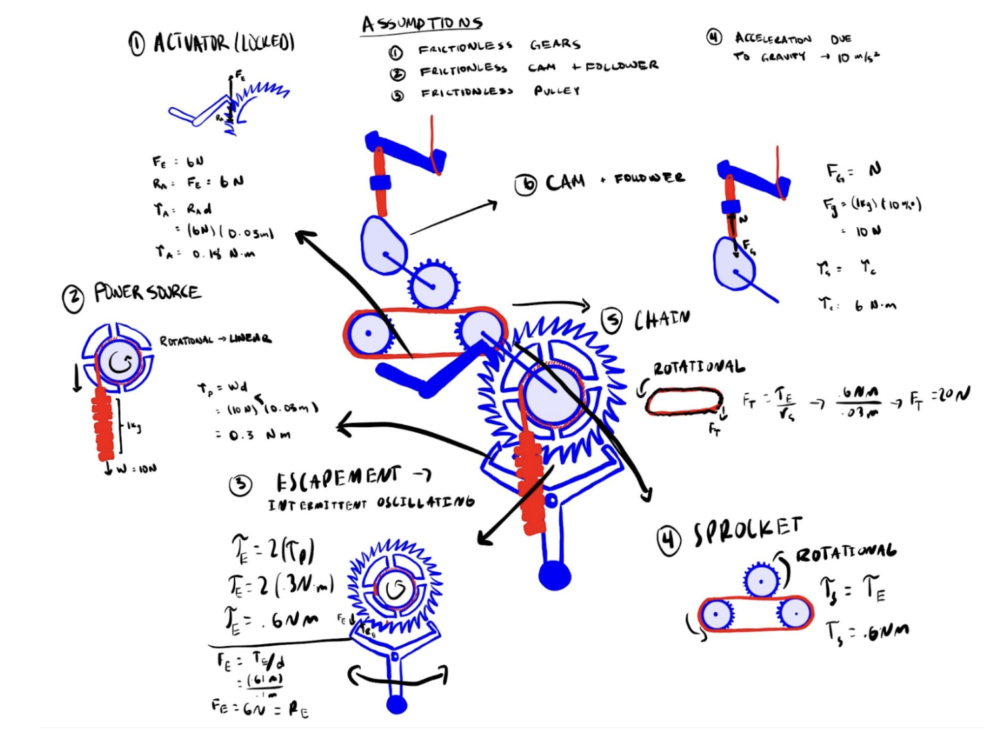

Hello, I'm
Marí Zampa
Mechanical Engineer


Hello, I'm
Mechanical Engineer
Get to know more

Stanford Shape Lab resercher
Stanford Solar Car mechanical designer

Stanford University
B.S. Mechanical Engineering
Hello! I'm Marí Zampa, a Mechanical Engineering student at Stanford University with a passion for robotics, 3D modeling, and coding
Explore My
Browse My


Worked on the aerobody design and aerodynamic performance of the Stanford Solar Car, focusing on low-drag surfacing, crosswind stability, and packaging constraints. Used CAD and CFD to iterate on body shape, canopy placement, and underbody flow to improve efficiency for long-distance racing.
Balanced ultra-low drag with real-world constraints: driver visibility, solar array area, structural hardpoints, and manufacturability in carbon fiber. Built a workflow that connects surface modeling to meshing and solver setup, so design decisions in CAD translate directly to validated CFD results.








Set up external aerodynamics CFD to evaluate drag, lift, and yaw behavior. Ran mesh-independence studies, refined boundary layers for y+ targets, and compared configurations to guide design decisions.




Designed and built a fully mechanical door-announcement system driven by a falling-weight powertrain. Users pull a tactile lever to activate the machine, then choose between two Braille buttons (1-ring or 2-ring) to decide how the bell rings each rotation.
The project focused on affordance and accessibility: the lever shape, material contrast, and Braille labeling allow low-vision users to intuitively operate the machine by touch alone. Internally, the mechanism uses a regulated escapement, a 4:1 gear reduction, a clutch-actuated bevel gear selector, and a cam-and-follower bell striker.





Built a series of wearable wristband prototypes that provide real-time vibration feedback based on handwriting accuracy. Iterated from passive mechanical resistance to fully programmable multi-motor haptics using ERM motors, an audio exciter, and finally DRV2605L LRAs driven through a TCA9548A I²C multiplexer. The system connects to a Node.js + Express web app that streams stylus error data, visualizes error, velocity, and pressure, and keeps feedback latency under 50 ms.
The project explores how wearable haptics can support handwriting learning when visual feedback alone is not enough, especially for children with motor or visual difficulties. By mapping drawing error into directional wrist vibrations, the wristband turns abstract performance metrics into intuitive physical cues, building muscle memory and enabling more accessible, multi-sensory handwriting practice.
The first prototype used a passive rubber-band linkage between the pen and iPad to add mechanical resistance as the pen moved. Users completed a point-to-point task while the band increased tension with displacement, demonstrating that simple physical resistance can influence handwriting accuracy. However, the force range was small, there was no programmability, and it was only tested with two participants.


The second prototype introduced active haptics using three ERM vibration motors on a Velcro wristband, driven by an Arduino Nano 33 IoT and N-MOSFETs. PWM control varied vibration intensity based on error, so the wristband vibrated more strongly as the pen moved away from the target. While this added real-time programmable feedback, the motors were too weak for clear directional cues and had a slow response time of about 100 ms.


The third prototype replaced ERMs with a Dayton audio exciter mounted on a wristband and driven by an XY-502 amplifier. This setup produced much stronger, smoother vibration and supported combined haptic, visual, and auditory feedback using a Stevens’ law mapping (error1.05). Despite the powerful sensation, the exciter remained non-directional and low-frequency, limiting its ability to communicate stroke direction.


The final prototype used four DRV2605L-driven LRA motors connected through a TCA9548A I²C multiplexer, giving each motor its own channel and fully independent control. This configuration enabled directional patterns (for example, an “L” drawn as top → bottom → left → right), stroke-like sequences, and error-based feedback where more motors and higher intensity signaled larger deviations. With <50 ms response time and compact hardware, this wristband delivered both high-fidelity and directional haptic guidance.

Created a joystick-controlled Snake game on an LED matrix to explore how physical movement maps to voltage changes and real-time visual feedback. Moving the joystick steers the snake across the matrix, with the game resetting automatically after a game over.
The game uses the joystick’s two potentiometers—one per axis—to translate stick position into analog voltages. By reading those voltages and mapping them to grid positions, the code updates the snake’s direction smoothly while handling drift, dead zones, and stable motion so the controls feel predictable and responsive.
Objective: Understand how the joystick’s voltage outputs can be used to drive a
multi-LED display and implement real-time game logic.
Implementation: Wired the joystick’s 5 V, GND, Xout, and Yout pins to Arduino
analog inputs, then used analogRead() and scaling to map voltages to positions on the LED
matrix.
Challenges: Compensated for stick drift by recalibrating the resting voltage and adding
a dead zone so the snake only moves when the joystick is intentionally pushed.
Outcome: A responsive LED-matrix Snake game that updates cleanly and restarts on its
own when the player loses or moves the joystick again.
Designed and built a small airfoil and load-cell stand for the ME subsonic wind tunnel to measure lift across angles of attack. Fabricated the wing and mounting hardware, calibrated the vertical load cell with known weights, and ran tests while stepping through AoA. The lift–AoA curve showed the expected linear region up to stall, validating the force-measurement setup.